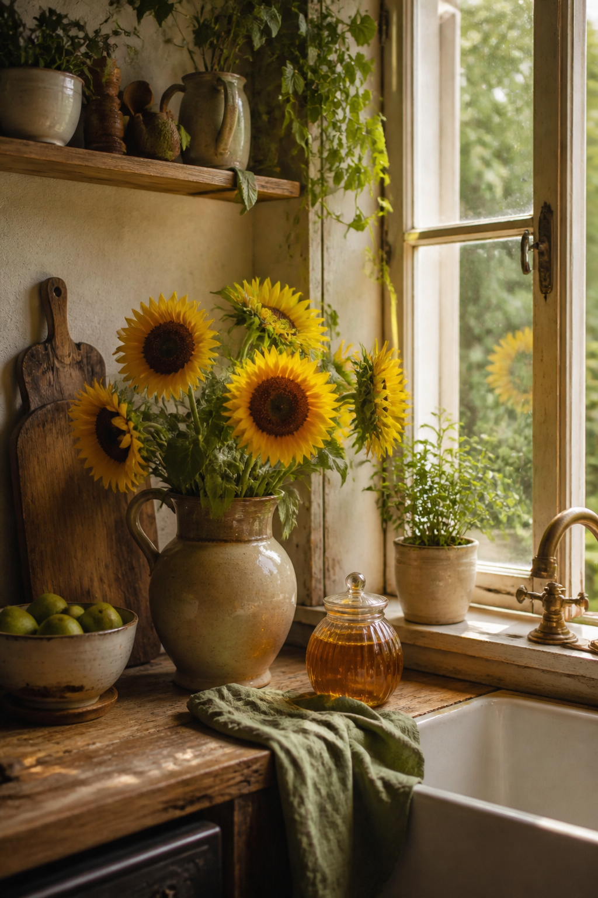
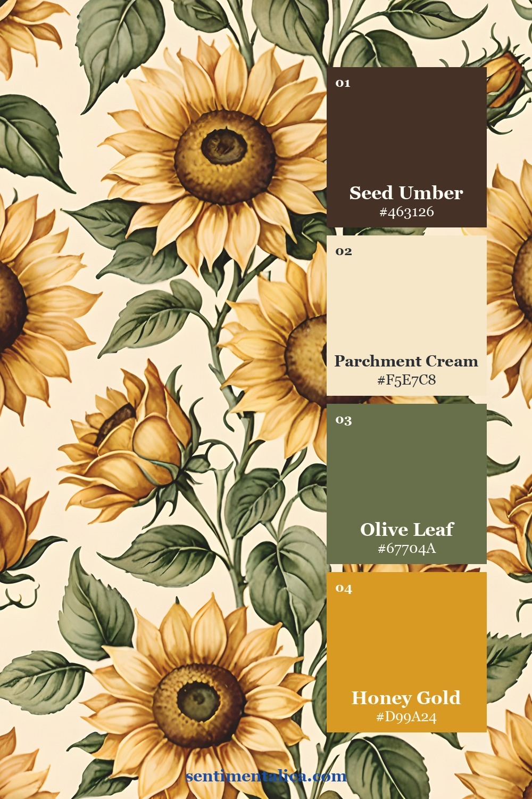
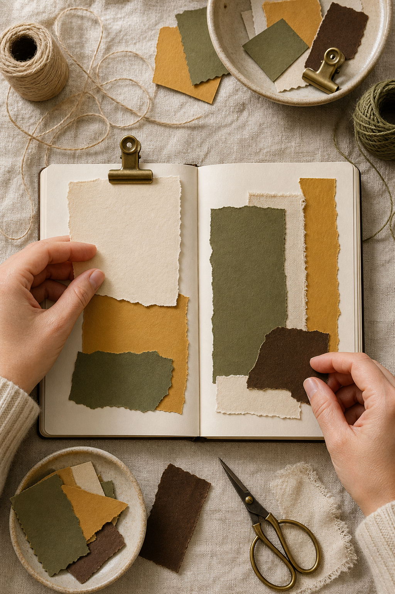
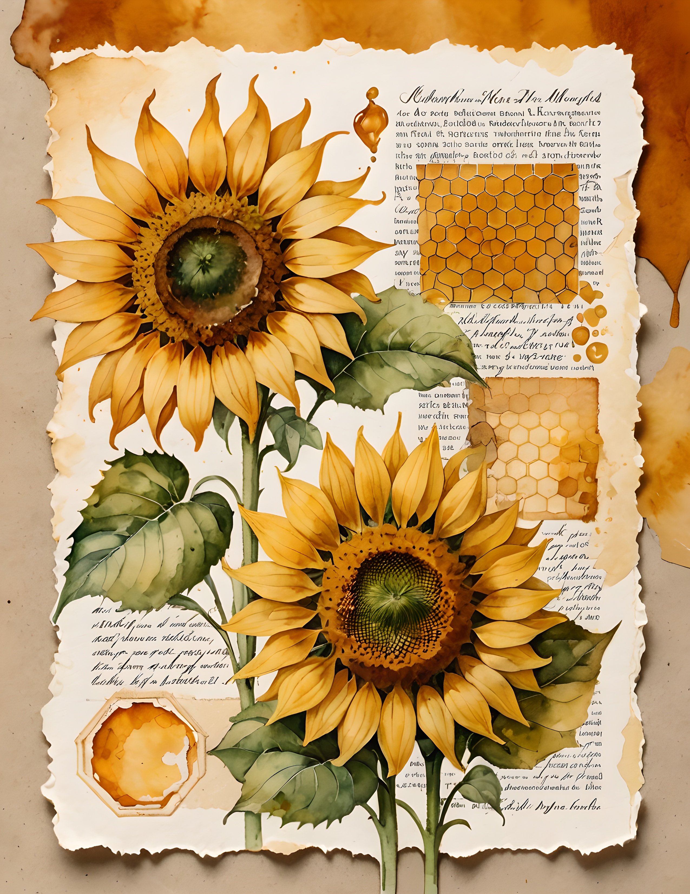
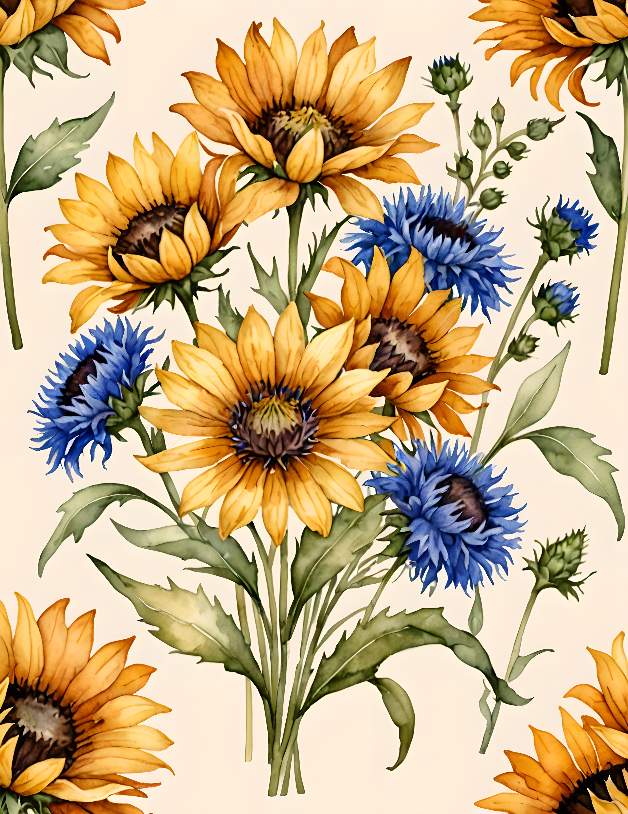
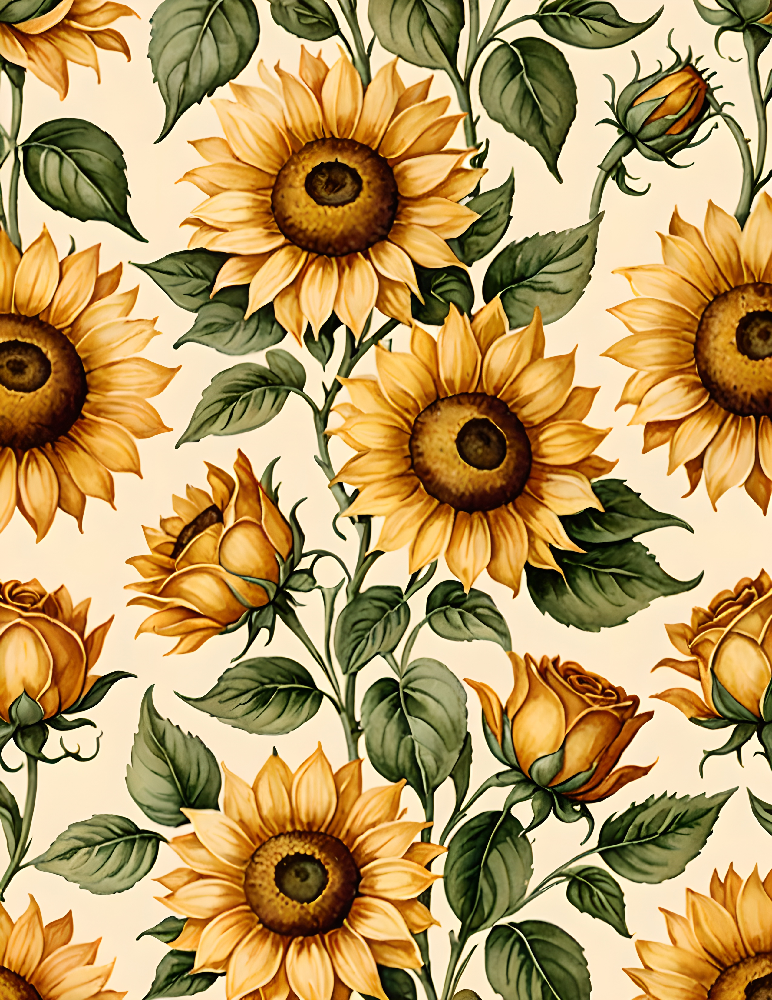

Sunflower yellow becomes easier to use when it is treated as light rather than background. Pair honey gold with parchment cream, olive leaf, and seed umber, and the page feels warm, botanical, and grounded.

Ground the palette with seed umber
Deep brown belongs in flower centers, handwriting, narrow mats, and small fabric pieces. It gives the yellow a place to land. Use one decisive umber shape, then repeat it once in a tiny detail.

Let parchment cream carry the page
Cream should occupy the most space: the journal base, writing block, envelope, or broad torn layer. It keeps strong yellow from taking over and makes olive leaves look fresher.
Repeat olive as the support color
Olive works like a bridge between warm gold and dark brown. Repeat it three times in unequal sizes—a fabric strip, a small label, and one painted edge. That repetition makes varied sunflower imagery feel cohesive.

Keep honey gold special
When the focal image already contains large sunflowers, avoid adding yellow everywhere else. One golden thread, waxed paper tab, or painted mark is enough. The eye reads the whole page as sunny even when the accent occupies very little space.

Build the spread by role
Start with cream, place one strong umber anchor, add olive in repeated mid-sized pieces, and finish with the smallest gold accent. If the page feels heavy, increase cream rather than adding another color.

See the real Honey Bloom pages



The Honey Bloom commercial-use watercolor image collection is a natural starting point for garden journals, late-summer memories, recipe pages, and warm farmhouse themes.
Image note: Some visuals in this article were created with AI and curated by Sentimentalica. Palette cards and carousel images use genuine pages from the featured collection.